Start here
Guitar Lab is five tools in one window. To turn your guitar into MIDI you only need the top bar and the Guitar → MIDI tab. The other tabs are separate tools you can open later.
You can ignore for now: Chord Shapes, Reharm Lab, Trainer, the keyswitches, the MIDI channel settings, and almost all of the Play & Write controls. They do nothing until you use them.
Not sure what something is? Hold the mouse over it. Every control has a tooltip, and its first line in bold is its name. The Manual button in the top bar opens this page.
A. Practise with Guitar Lab's own sound
- Put Guitar Lab on the audio track your guitar is plugged into. Set the track's Monitor to In.
- Top bar: check Strings and Tuning match your guitar.
- Guitar → MIDI tab: Tracking = single notes (mono) for lead playing, or chords too (poly) for chords. Input = the input your guitar is on.
- Press Calibrate... once and follow the steps. Then save it with Save as preset.
- Tick Built-in sound. Tick Hear guitar if you also want your real guitar.
B. Play another instrument with your guitar
- Do steps 1–4 of recipe A.
- Untick Built-in sound, so you only hear the other instrument.
- Make a MIDI track with the instrument. MIDI From = your guitar track. In the second box below it choose Guitar Lab. Monitor = In.
- For bends on each string: right-click the instrument's title bar and choose Enable MPE Mode. Set its pitch bend range to 12.
C. Turn your playing into tab
- Do steps 1–4 of recipe A.
- Open Play & Write. Tick Count-in and Metronome if you want to play in time.
- Press Record guitar (red). After the count-in, play. Press it again to stop.
- Fix anything by hand (click a note, change it; Undo removes the whole take). Then Export... as PDF, text tab, MusicXML or Guitar Pro.
D. Learn a chord
- Open Chord Shapes. Type the chord (for example
Cmaj7,F#m7b5,D/F#) or pick a root and a type. - The gold cards come first: the fingerings most guitarists use (open chord, barre chords). All other shapes follow.
- Click a card to hear it and see it on the big fretboard, with each note's job (R, 3, 5, 7…).
The window
Five parts, from top to bottom. The tab area changes with the tab you pick. When a tab needs more room (a long list of chord shapes or suggestions), the whole page scrolls up and down with one scroll bar.
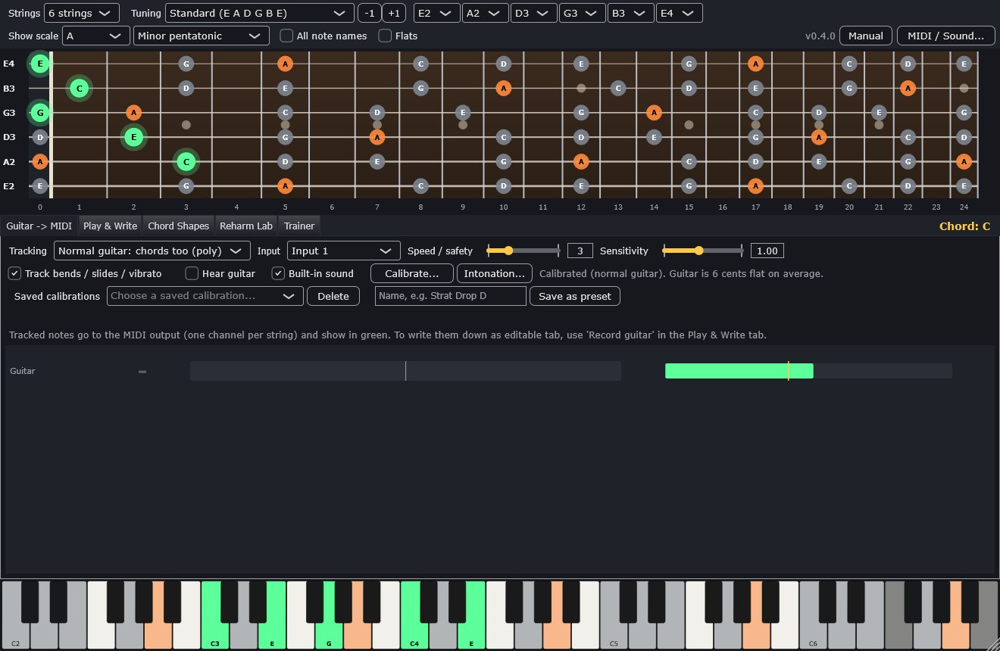
- Top bar: your guitar (strings, tuning), the scale display, the version, Manual and MIDI / Sound.... Details
- Fretboard: 24 frets. Shows what is sounding; click it to play. Details
- Tabs: Guitar → MIDI (opens first), Play & Write, Chord Shapes, Reharm Lab, Trainer. At the right: the chord name of what sounds now. Details
- Tab area: the controls of the tab you picked.
- Piano: the same notes on a keyboard. Details
Help on every control: hold the mouse still on a button, box or slider for about a second, and a help text appears. It closes when you move away.
Nothing is forgotten: the window size, the open tab and every choice in every tab come back after you switch tabs, close or minimise the window, and they are saved with your project. Work in progress (a reharmonized progression, the open Trainer question, the undo history, a calibration you started) also comes back while the plugin stays loaded.
Sliders show a small mark at each end of their track: the lowest and the highest value.
Top bar
Tell Guitar Lab what guitar you have. Do this before you calibrate: a calibration only fits the tuning it was made for.
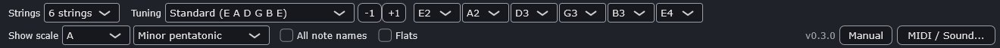
Your guitar
6, 7 or 8 strings. Changing it loads the standard tuning for that guitar.
Phrase notes on strings that no longer exist are removed.
A ready tuning: Standard, Drop D, Open G, DADGAD and more. "Custom" when you changed a single string yourself.
Every string down or up a half step (E standard → Eb standard).
The open note of each string, low string on the left. Change one box for your own tuning.
The number is the octave: E2 is the low E of a normal guitar, E4 the high E.
Display and help
Root and scale type: shows that scale on the whole neck and the piano. Orange = root, grey = other notes. "Off" hides it. Only a display.
Every note name on every fret, faintly. Good for learning the neck.
Bb, Eb… instead of A#, D#… Same notes, other names.
The version you have installed.
Opens this manual in your web browser.
Guitar → MIDI tab
Listens to your real guitar and turns it into MIDI: notes, bends, slides, vibrato and velocity. It is the first tab and opens by default.
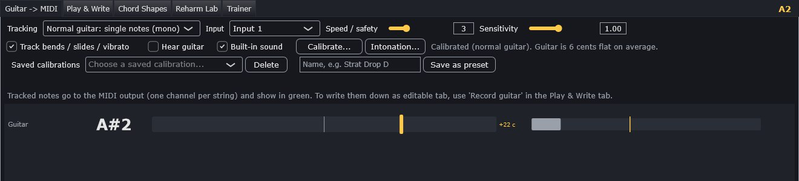
Settings
Off: Guitar Lab does not listen.
Normal guitar: single notes (mono) (the default): one note at a time. The fastest and most exact mode for lead playing: bends, slides, vibrato, hammer-ons.
Normal guitar: chords too (poly): several notes at once from one cable: chords, double stops, ringing arpeggios, with bends per note. About 50–65 ms delay. It can miss an octave note hidden inside another string's sound; when the strum fits a known chord shape (or a chord you taught it), those notes are filled in at once, on the right strings. A Full calibration helps mono the most; for poly it is still being improved.
Hex pickup: a special pickup with one output per string (like a Roland GK). Every string tracked on its own.
Which input your guitar is on. In a DAW this is the left (Input 1) or right (Input 2) channel of the track. "Mix of all inputs" adds them.
1–2 = fastest, but more wrong "blip" notes on the pick attack. 3 = default. 5–8 = slower, very few wrong notes.
Higher = soft and ghost notes too, but noise may start notes. Lower = only strong notes. 1.00 = the level found by calibration.
On: pitch changes become smooth pitch bend. Off: every pitch change is a new note (for instruments that handle pitch bend badly).
Your clean guitar through Guitar Lab's output. On a DAW track Guitar Lab replaces the track's sound, so turn this on to hear your guitar too. Off if you hear it another way (amp, interface), or you will hear it twice.
On: Guitar Lab's own plucked sound, to practise alone. Off: silent, MIDI only, when the MIDI plays another instrument.
Saved calibrations (presets)
Pick one to load it. It also sets Strings and Tuning to the ones it was made for. Calibrate each guitar (and tuning) once, save it, and load it again later.
Default (no calibration), at the top of the list, goes back to the plain settings, as if you never calibrated.
Shared by all your projects and the standalone app. Stored as small files in %APPDATA%\Guitar Lab\Calibrations.
Type a name (for example "Strat Drop D") and save the calibration you are using now. The same name replaces the old one.
Deletes the chosen preset file. Click twice ("Sure?") to be safe.
What you see
Left: the note it hears. Middle bar: how far from that note, in cents (100 cents = one half step): green in tune, yellow a little off, red far off. A tuner, too.
Right bar: your input level. The yellow line is the level a note must reach. If you never cross it, raise Sensitivity or the input gain.
Only when something is wrong ("No audio input"…). Read it first if nothing is tracked.
Calibration
Guitar Lab listens to your guitar once and remembers how it really sounds. Tracking is much better afterwards. It is saved with your project, and you can save it as a preset.
One step at a time: press Listen (or the Space bar), play what is shown, and wait for the green OK. Then the next step appears; press Listen again. Guitar Lab only listens after your press, and only to a new note: a string that still rings from the step before is ignored. Played something wrong? Press Back and play it again.
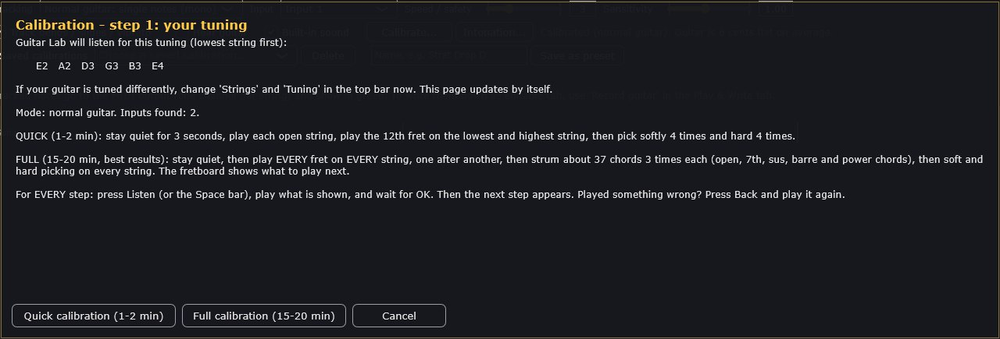
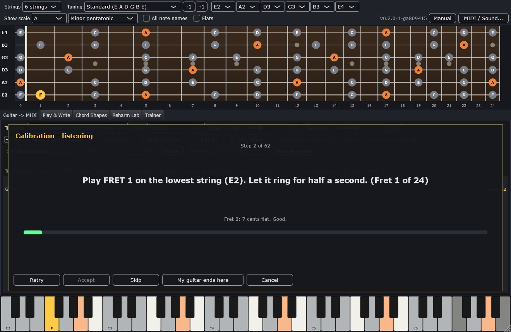
Step 1 · your tuning
Quiet for 3 seconds → each open string → the 12th fret on the lowest and highest string → pick softly 4 times → pick hard 4 times.
Quiet → every fret on every string → about 37 chords, 3 strums each (open, 7th, maj7, sus, barre and power chords, in the fingerings most people use) → soft and hard picking on every string.
Best results: the string is guessed from its sound, poly mode learns your guitar's tone, taught chords are recognised, velocity fits each string, and you get the intonation report.
Every step
Press it (or the Space bar, or Enter), then play what is shown. While it listens the button says Stop listening; after a problem it says Again. Nothing clear for 10 seconds: it stops and waits for you.
In a DAW the Space bar may start the DAW instead: then click the button.
One step back. The result of that step is forgotten; play it again. Press it more times to go further back (also from the last page).
Only shown when it sounded wrong (out of tune, not the chord). Keeps it as it is, for example a string tuned like that on purpose.
Skip this step; safe defaults are used.
The fret asked for does not exist on your guitar (fret 23 on a 22-fret guitar).
At the end: use the new results, or keep the old ones.
Calibrate again after new strings, another tuning, another pickup or another audio interface.
Closing the plugin window during calibration only pauses it: normal tracking goes on, and the wizard opens again at the same step.
Intonation report
From a Full calibration: how in tune every fret of your guitar plays, compared with its own open string, and what to adjust.
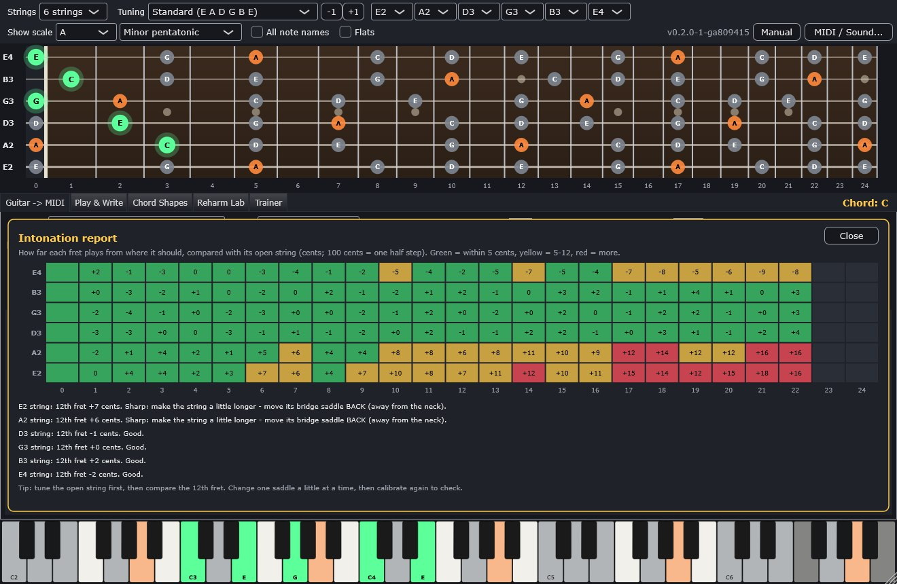
How to read it: green = within 5 cents (fine), yellow = 5–12, red = more. If the 12th fret is sharp, the string is too short: move its bridge saddle back (away from the neck). If it is flat, move it forward. Change one saddle a little at a time, retune, and calibrate again to check.
Play & Write tab
Holds a phrase: guitar music shown as tab, up to 512 bars (about 17 minutes at 120 BPM). Record it from your real guitar, or write it with the mouse. It plays as MIDI, becomes a MIDI clip, or exports as tab.
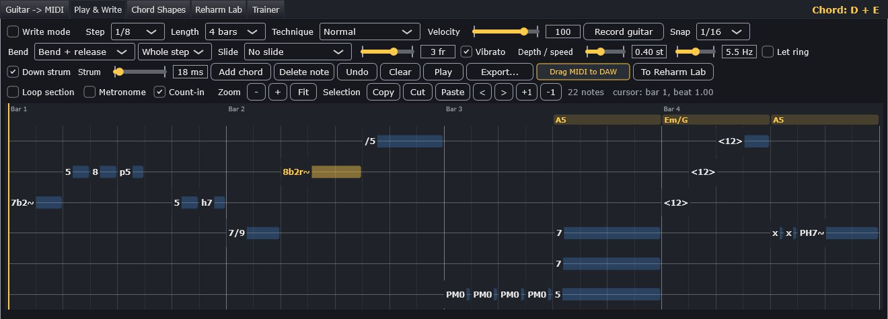
Recording your guitar
Press (red), play, press again. Your playing appears as tab: hammer-ons (h), pull-offs (p), bends (b), slides (/ \), vibrato (~) and chords are recognised. One Undo removes the whole take.
Needs Guitar → MIDI tracking on. If the DAW (or Play) runs, notes keep their place in the bar.
When nothing is playing: one bar of clicks (1 2 3 4), then Play and the recording start together at the bar of the cursor. Your notes land on the beat.
A click on every beat (higher on beat 1) while the phrase plays. Only in Guitar Lab's audio, never in the MIDI.
Moves recorded notes to the grid. 1/16 (default) or 1/8 = tidy tab; Off = your exact timing.
Practice and playback
Plays the phrase in a loop at the internal tempo. With "Sync to host" on, it also plays when the DAW plays.
Drag in the ruler (the bar numbers) to mark a section in gold; Play then repeats only that part. Click the ruler once to end the loop.
Wider or narrower tab; Fit shows the whole phrase. Also Ctrl + mouse wheel.
How many bars (1 to 512). Recording makes it longer by itself when needed.
Editing notes
Click a note; Ctrl + click for more; drag a box on an empty place; Ctrl + A for all. Right-click a note to delete it.
Copy or cut the selected notes, then paste them at the yellow cursor (Ctrl + C / X / V).
Move the selection one step earlier / later (Left / Right keys).
One half step higher / lower on the same string (Up / Down). Shift + Up / Down: the same pitch on the next string (another fingering).
Delete the selection (Delete key); go back one change (up to 100, Ctrl + Z); remove everything (Undo brings it back).
Sends the chords of the phrase to the Reharm Lab as a progression, to try other chords. Tip: record yourself strumming a song, then press this.
The tab view
One row per string, highest on top, like normal tab. Time goes right. Yellow line = write cursor, green = playback, gold = loop section.
The gold chord names under the bar numbers: found from strummed chords and from arpeggios over 3+ strings. Hover a name for its notes.
h = hammer-on · p = pull-off · t = tap · PM = palm mute · x = dead note · <12> = natural harmonic · PH = pinch harmonic · b2 = bend 2 half steps · pb = pre-bend · r = release · / \ = slides · ~ = vibrato.
Writing by hand (ignore these if you only record)
On: each click on the fretboard also writes the note at the cursor. Shift + click collects notes for Add chord.
Length of each written note; how it is played (hammer-on, palm mute, harmonic…); how hard (1–127).
Bend shape and amount; slide type and distance; vibrato depth and speed; let the note ring until the next one on its string.
Strum direction and time (0 = all at once, 10–30 ms normal); writes the Shift + clicked notes as one chord.
Drag it onto a DAW track: the phrase arrives as a MIDI clip, with every bend and slide.
Export
The Export... button in Play & Write saves the phrase as a file. The usual way: record → fix by hand → export.
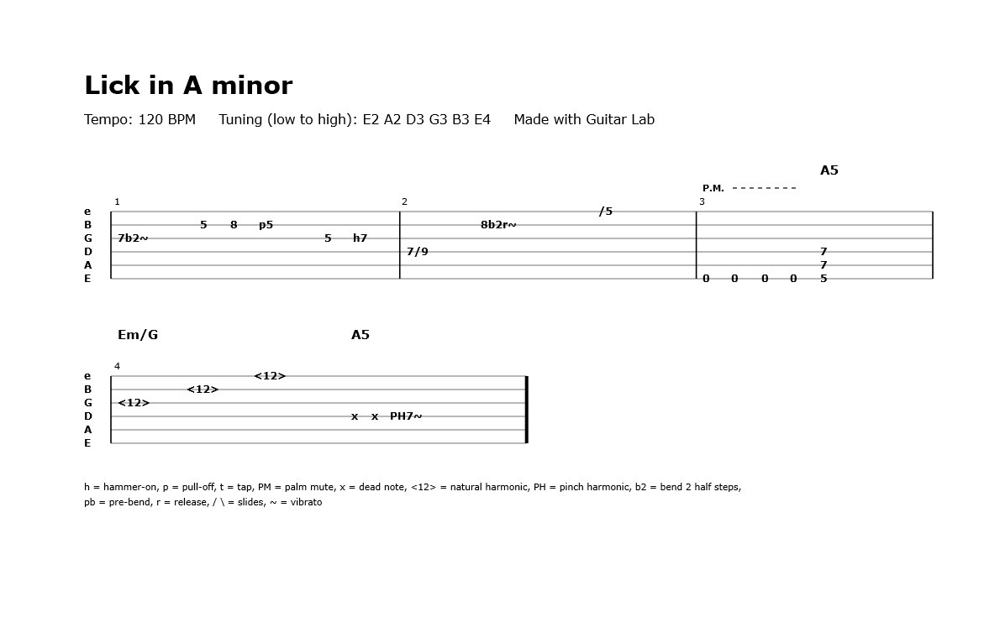
Formats
For your DAW, with every pitch bend, slide, vibrato and keyswitch.
Classic e|--3--5--| tab with chord names, to paste into a message or forum. "Copy text tab to the clipboard" skips the file.
A printable tab page, like a tab book.
Opens in MuseScore, Guitar Pro, Sibelius and Finale as tab and notes, with chord symbols.
Opens directly in Guitar Pro (3 to 8), TuxGuitar and Songsterr. Up to 7 strings; GP3 has no palm mute.
If a file does not open in your program, use MusicXML and let us know.
Chord Shapes tab
Type or pick any chord and see every way to play it on your guitar and tuning, as chord diagrams.
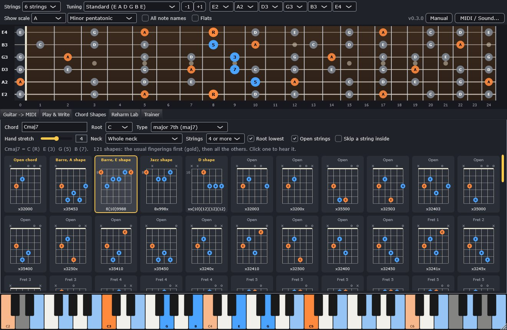
Controls
Type any chord symbol: C, Am, F#m7b5, Bbmaj9, G7#9, E7alt, Dadd9, C6/9, G13(#11), Cm(maj7), D5, Bdim7, C-7, CM7, Cø. Slash chords put a note in the bass: D/F#, Am7/G.
Or pick a root and one of 35 chord types; it writes the symbol for you.
The most frets one shape may cover (4 = normal hand).
Only shapes in this part of the neck (open position, frets 5–10, …).
How many strings a shape uses: from the left number to the right number, up to all strings of your guitar (7 and 8 too). More = fuller strum, fewer = small jazz/funk shapes. Example: 3 to 4 = only small shapes.
Root (or the "/" note) as the lowest note; allow open strings; allow one muted string in the middle (jazz voicings).
The diagrams: the thickest string is on the left; the number on the left is the fret; x = don't play, o = open. Orange dot = root, blue = other chord notes. Gold title = a fingering most guitarists use (open chord, barre chord on the E / A shape, D shape, jazz shape), most played first. Click a shape to hear it: a new chord always stops the one before, in the sound and on the neck.
7 and 8 strings: the search uses every string of your guitar. The gold "usual fingerings" are six-string shapes, placed on each group of six strings; all other shapes come after them.
Chord name (analyser)
At the right of the tab row, Guitar Lab names the chord of whatever sounds right now: your real guitar, the fretboard, the piano, the phrase, or MIDI coming in.
It reads chords the way a music teacher does: triads and power chords, 6ths, 7ths, 9ths, 11ths and 13ths, altered chords (7♭9, 7♯9, 13♯11, 7alt), sus and add chords, slash chords ("C/E" = C with E in the bass), and voicings without a root. Hover over the name to see the notes with their jobs, and the other ways to read the same notes. It is empty in the Trainer, so it never gives answers away.
Reharm Lab tab
Chord ideas: type a progression and get new chords that fit, with shapes you can play. "To Reharm Lab" in Play & Write fills it with the chords of your phrase.
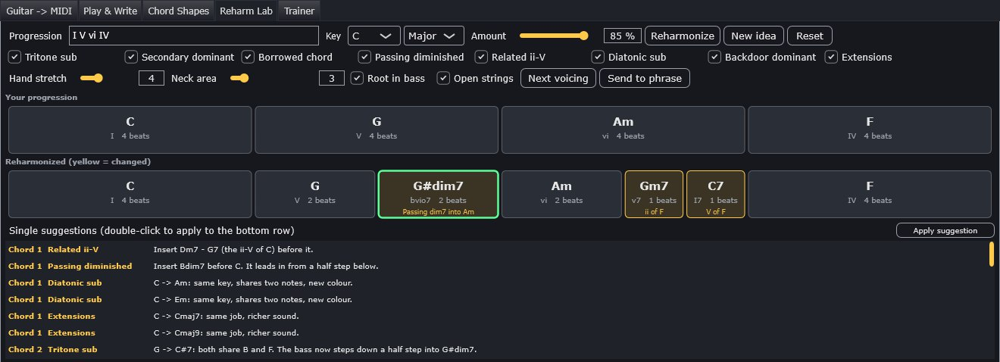
Your progression
Chords with spaces between them: Roman numerals (I V vi IV) or names (C G Am F). One bar (4 beats) each, unless you give a length:
C:2 G:2 Am F:8 = C and G 2 beats, Am 4, F 8. Any length works, like G:1.5.
| C G | Am | F | = bar lines: the chords in one bar share it (C and G 2 beats each).
Or drag the line between two chord cards left or right (half-beat steps, Shift = quarter beats); the text changes with it.
The key of the song. Roman numerals are read in this key. Chord names (Em, G7) stay what you typed; the key then only decides the numeral shown under each card (Em in C = iii), the sharps or flats in the names, and the key-based ideas: borrowed chords, diatonic subs and the backdoor dominant. Tritone subs, secondary dominants, passing diminished chords and ii-V's come from the chords themselves. Wrong key = wrong numerals and odd "borrowed" ideas.
How many chords may change; build a new version; other random choices; back to yours.
Kinds of change (tick the ones you want)
A dominant chord swapped for the one 6 half steps away (G7 → Db7).
The "V" of the next chord before it (A7 before Dm).
A chord from the parallel minor or major (Fm in C major).
A diminished chord between two chords; the bass walks by half steps.
The matching "ii" before a dominant (Dm7 before G7).
A chord from the same key sharing two notes (C → Am or Em).
Reach the home chord from a step below (Bb7 → C).
Same chord, richer (C → Cmaj7 or Cmaj9).
Shapes and results
How the voicings are chosen, as in Chord Shapes.
Click a card to hear it, see its shape and list only its suggestions below (green border = selected). Next voicing shows another shape. The width of a card is its length; drag the line after a card to change it.
Every single change found, with a reason. Double-click one to use it. With a chord selected, only that chord's ideas are listed; Show all (or a click on empty space) lists them all again.
Writes the progression into Play & Write as strummed chords.
It replaces the notes already in the phrase. Undo brings them back.
Trainer tab
Quizzes for the neck and for your ears. The neck never shows answers before you answer.
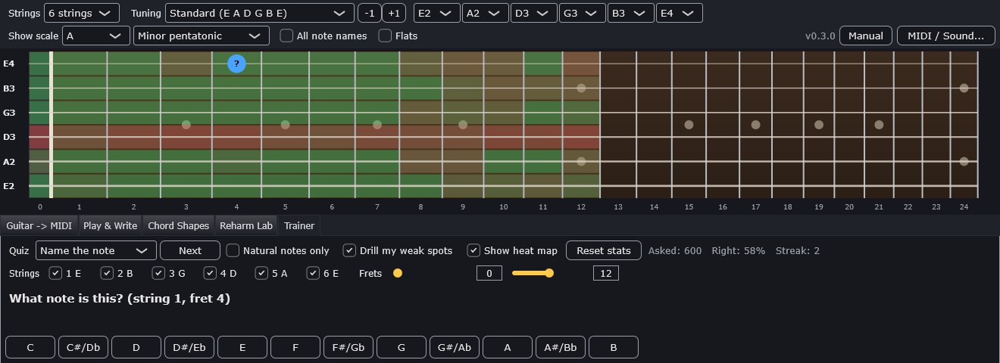
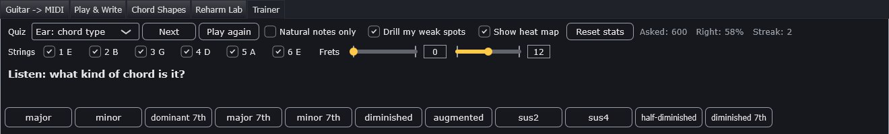
Quizzes
A dot on the neck: click its name (or a piano key).
A name: click every place it is, then Check.
A chord: click every chord note, then Check.
Two dots: name the distance from the blue up to the orange.
Two notes are played, low then high (up to an octave). Name the interval.
A real guitar shape is strummed. Name its type: major, minor, 7, maj7, m7, dim, aug, sus2, sus4, half-diminished, dim7.
A note is played. Play it on your real guitar (turn on Guitar → MIDI), or click it on the neck or piano. Any octave counts.
Controls
A new question (answer time counts from here); check your clicks; hear an ear question again.
Only these strings and this fret range (for example the 4th string, or frets 12–24).
No sharps/flats; ask your weak spots more often; colour the neck by how well you know it.
Deletes all scores and the heat map.
This cannot be undone.
MIDI / Sound settings
Opened with MIDI / Sound.... Nearly everything is fine as it is; the two that matter are Pitch bend range and Built-in sound.
Why one MIDI channel per string? A MIDI cable has 16 channels, like lanes on one road. A pitch bend bends every note on its channel. So each string gets its own channel (high E = 2, B = 3 … low E = 7): bending the G string bends only the G string. Channel 1 is the "master" channel of MPE: messages for the whole instrument (sustain pedal, mod wheel, volume).
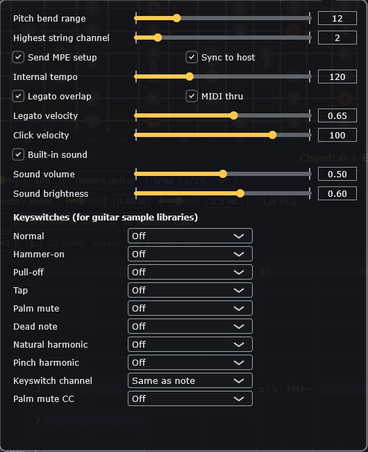
MIDI
Must match the bend range of the instrument that gets the MIDI, or bends are out of tune. 12 is good.
The channel of the high E string (2). Use 1 only for old "guitar mode" samplers that need string 1 on channel 1 (then also turn off Send MPE setup).
Tells MPE instruments "one channel per string".
The phrase plays when the DAW plays, in time.
Tempo when the DAW is not playing, and in the standalone app.
Hammer-ons and pull-offs overlap the note before and are softer, so guitar libraries play them smoothly.
Pass incoming MIDI on; how hard clicked notes are.
Sound and keyswitches
Guitar Lab's own sound on/off (same switch as on the Guitar → MIDI tab), its volume, warm or bright.
Only for guitar sample libraries that change style with special low notes or a controller. Take the values from the library's manual. "Off" sends nothing.
Fretboard and piano
Always visible. They show what is sounding, and you can click them to play.
Mouse
Plays that note (and sends it as MIDI).
Bends the note (one string gap = one whole step).
Slides along the string.
Collects notes for a chord (blue rings), then Add chord in Play & Write.
Plays it and shows every place that note is on the neck. Dim keys are outside your guitar's range.
Colours
- Green: sounding now, also from your real guitar.
- Orange: a root note.
- Grey: the other notes of the scale.
- Blue: chord notes, or notes collected with Shift + click.
- Yellow: during calibration, the spot to play next.